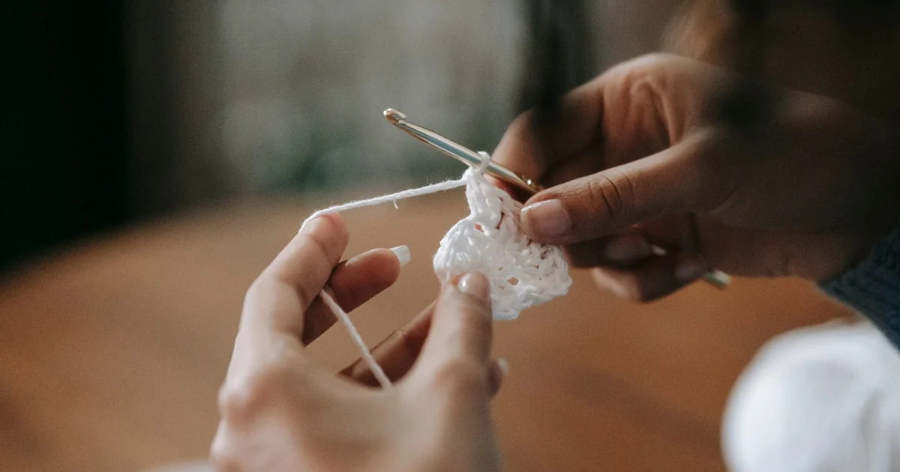

Tools, Yarn & Materials · Beginner guide
Best Crochet Tools for Beginners: What You Actually Need
Most beginners can start with a hook, suitable yarn, scissors, a tapestry needle, and a stitch marker.

Short answer: Most beginners can start with a hook, suitable yarn, scissors, a tapestry needle, and a stitch marker.
Specialty tools can wait until a pattern calls for them. Choosing tools that solve a current problem is more useful than buying a large kit.
Before you begin
Check the pattern’s materials list first. For practice, choose a comfortable hook and smooth yarn; add scissors and a blunt needle for finishing.
Step-by-step instructions
- Gather the pattern hook and yarn, or use the yarn label as a starting point for practice.
- Keep small scissors nearby for cutting tails.
- Use a blunt tapestry needle to weave ends and a removable marker to track a stitch or round.
- Add a measuring tape or row counter only if the project needs measurements or progress tracking.
How to check your work
You have the tools needed to complete the pattern’s listed steps. If you cannot identify a tool’s purpose in the instructions, you may not need to buy it yet.
Common beginner problems
- My hands hurt with this hook: Try a different handle shape or grip, take breaks, and avoid crocheting through pain.
- I keep losing the first stitch: Use a removable marker or contrasting scrap yarn at the edge.
- The needle will not pass through the yarn: Choose a tapestry needle with an eye large enough for the yarn, but a blunt tip for working through fabric.
Buy only what the project needs
A basic kit can stay small. Stitch markers, row counters, blocking mats, and specialty hooks are useful for some projects, but they are not required for every beginner pattern.
Frequently asked questions
Do I need stitch markers?
They are optional, but helpful for marking row edges, round starts, and increase points.
Do I need a yarn needle?
A blunt tapestry needle makes it easier to weave in tails and seam pieces.
Should I buy an ergonomic hook?
Only if the grip feels more comfortable to you; take breaks and stop if crocheting causes pain.